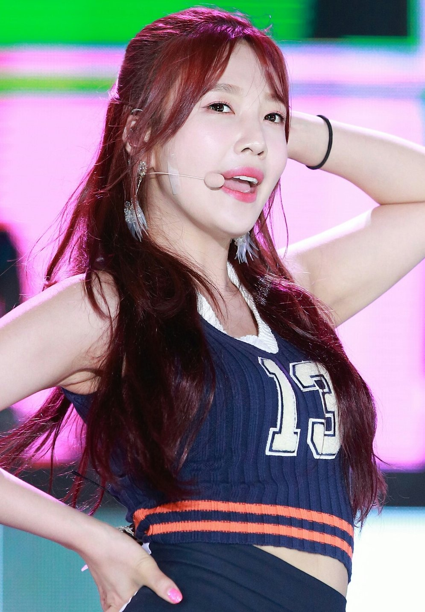
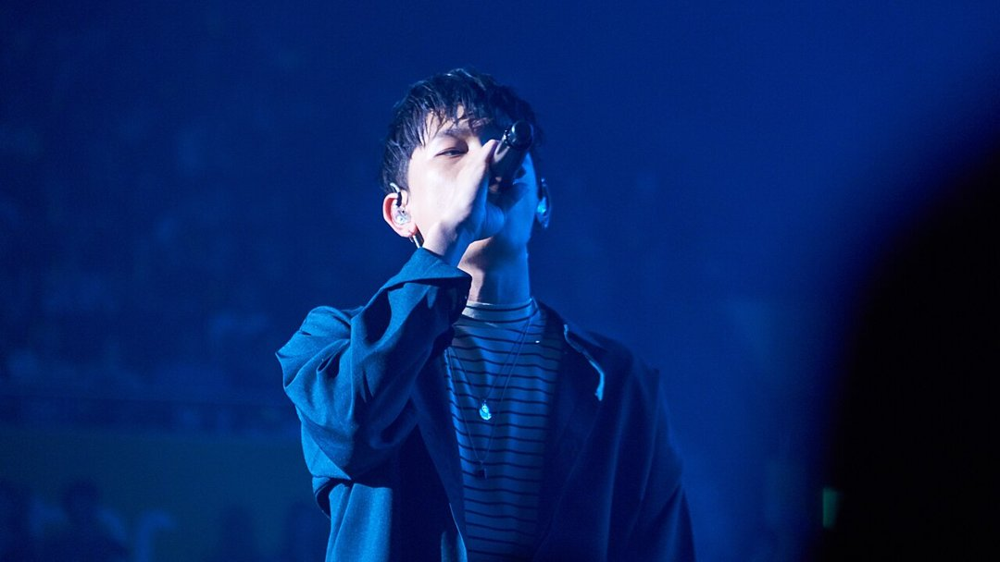
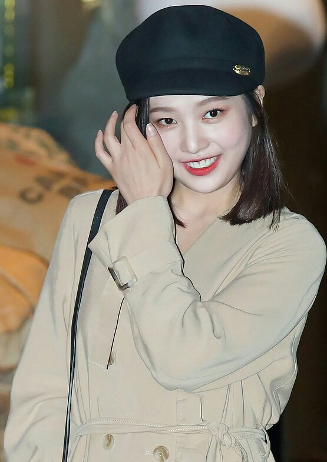
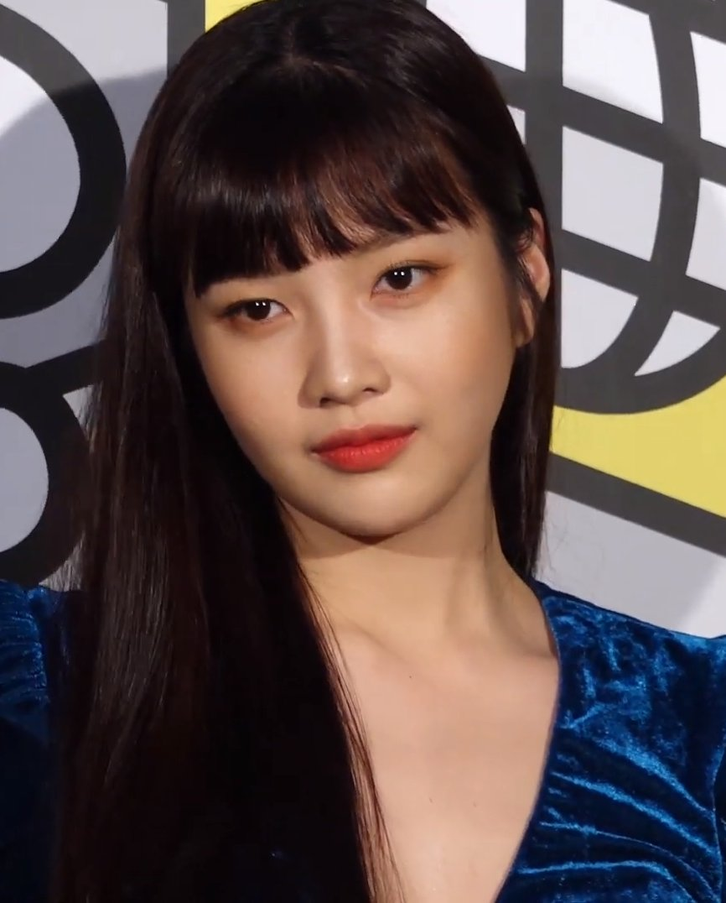

얼굴은 끝까지 나오지 않아요. 화면에 담긴 건 노래하는 두 사람의 몸짓, 그리고 조이 품에 안긴 크러쉬의 반려견이에요. 빼빼로데이였던 11월 11일, 크러쉬 유튜브 채널에 올라온 '삐그덕 Live with 조이' 이야기예요.
📷 사진 1 자리
▲ 사진: Hey Day / CC BY 4.0 / 위키미디어 공용
조이 크러쉬 듀엣을 보고 궁금해졌다면 세 가지만 짚으면 돼요. 이 곡은 원래 누구와 부른 노래인지, 두 사람이 언제부터 함께 노래했는지, 그리고 조이가 요즘 어디에 나오는지예요.
아이유가 부른 자리에 조이가
'삐그덕'은 크러쉬가 10월 21일 낸 디지털 싱글이에요. 정식 음원에서 피처링을 맡은 사람은 아이유였죠.
그러니까 이번 영상은 아이유 파트를 조이가 채운 '연인 버전'이에요. 공식 음원이 아니라 크러쉬가 자기 채널에 올린 라이브 영상이고, 공개 날짜도 빼빼로데이에 맞췄어요.
▶ 영상 1 자리
무대 의상이나 조명 같은 장치는 없어요. 두 사람은 얼굴을 드러내지 않은 채 편안한 분위기에서 노래하고, 조이는 노래하는 내내 반려견을 안고 있어요.
두 사람의 첫 노래는 2020년 '자나깨나'
이번이 두 사람의 첫 합작은 아니에요. 시작은 2020년 크러쉬 싱글 '자나깨나'였어요. 이 곡에 조이가 피처링으로 참여하면서 인연을 맺었고, 두 사람은 2021년 열애를 인정했어요.
📷 사진 2 자리
▲ 사진: snsd카드 / CC BY 4.0 / 위키미디어 공용
두 곡을 나란히 놓으면 차이가 보여요. '자나깨나'는 조이가 크러쉬의 곡에 피처링으로 들어간 정식 음원이었어요. 6년 뒤 '삐그덕'은 다른 가수가 피처링한 곡을 두 사람이 라이브로 다시 부른 영상이고요.
처음엔 작업으로 만난 사이였고, 지금은 열애 6년째인 커플이 같은 곡에 다시 목소리를 얹은 셈이에요. 공개 커플이 함께 노래한 영상이라 따로 설명을 붙이지 않아도 의미가 읽혀요.
배우 박수영의 월요일, '유일무이 로맨스'
듀엣 영상이 나오기 이틀 전에는 배우 박수영으로서의 소식이 먼저 있었어요. 11월 9일 월요일, 티빙 오리지널 '유일무이 로맨스' 1·2회가 공개됐어요. 4년 만의 드라마 복귀작이에요.
📷 사진 3 자리
▲ 사진: Hey Day / CC BY 4.0 / 위키미디어 공용
조이가 맡은 인물은 취업준비생 공유일이에요. 아르바이트와 면접 준비를 오가며 바쁘게 살다가, 톱스타 탁무이(김현진)의 매니저가 되는 역할이죠. 1·2회는 공유일의 정신없는 하루로 문을 열었어요.
📷 사진 4 자리
▲ 사진: Dispatch / CC BY 3.0 / 위키미디어 공용
제작발표회에서 조이는 레드벨벳 멤버들이 커피차로 응원해 줬다고 전했어요. 같은 주에 월요일엔 배우 박수영, 수요일엔 가수 조이가 차례로 얼굴을 비춘 셈이에요.
자료를 겹쳐 보니 6년 전 피처링으로 시작한 두 사람의 협업이 이번엔 라이브 듀엣으로 돌아왔다는 흐름이 가장 흥미로웠어요. 듀엣 영상으로 조이 목소리가 반가웠다면 같은 주에 시작한 '유일무이 로맨스'를 함께 챙겨 볼 만해요.
'삐그덕' 조이 버전은 크러쉬 유튜브 채널의 'Live with 조이' 영상으로 볼 수 있어요. 조이 주연의 '유일무이 로맨스'는 매주 월요일 티빙에서 2회씩 공개돼요.



